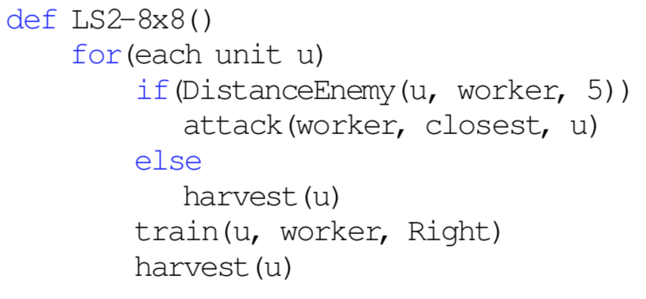
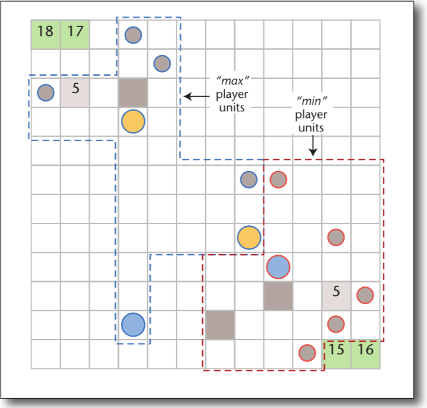
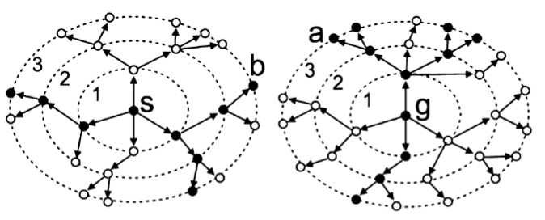

Past and Current Research
In this page I briefly describe a few projects I developed with students and collaborators. See my publications page for more information on these and other projects.
Synthesis of Programmatic Strategies
Recently, we developed a local search algorithm to synthesize programmatic strategies for playing RTS games (see paper). We showed empirically that the programs synthesized by our system are competitive in terms of winning rate with programs written by professional programmers. A qualitative analysis showed that both system and programmers derived similar strategies for playing the game, but the synthesizer was able to write low-level optimizations that are hard for humans to derive.

Our qualitative analysis also showed that all programs synthesized by our system could be easily interpreted (the example above is a strategy for playing MicroRTS). The main drawback of our approach to synthesizing programmatic strategies is that the local search algorithm needs to play a very large number of games to be able to synthesize strong strategies. We are currently investigating more effective search algorithms for synthesizing programmatic strategies.
Real-Time Planning in Adversarial Scenarios
We developed a population-based search algorithm for synthesizing a set of programmatic strategies to induce action abstractions for aiding a real-time planner (see paper). Our system synthesizes a set of complementary programmatic strategies, which are used to induce action abstractions by allowing a planner to consider during search only the actions returned by one of the strategies.

A system that combines action abstractions induced by programmatic strategies with a search algorithm that "pays attention" to different aspects of the game won the 2018 IEEE MicroRTS competition.
Single-Agent Search
We introduced Levin Tree Search (LTS), a combinatorial search algorithm that uses a policy to guide its search and has guarantees on the number of nodes one needs to expand to solve a problem that depends on the quality of the policy used in search. We also developed Policy-Guided Heuristic Search (PHS), a search algorithm that uses both a policy and a heuristic function to guide the search. PHS also comes with guarantees on the number of nodes expanded to solve a problem that depends on the quality of both the policy and the heuristic used in search. Our experiments showed that PHS outperforms policy-guided and heuristic-guided algorithms as it performs well in domains where the heuristic-based A* outperforms LTS and in domains where LTS outperforms A*.
We have also introduced Iterative Budgeted Exponential Search (IBEX) a framework that solved two long-standing problems in heuristic search. That is, A* can expand exponentially more nodes than uninformed search algorithms and IDA* might re-expand a quadratic number of nodes. Both A* and IDA* have almost linear expansion guarantees if using IBEX.
Classical Planning
We developed Complementary, a classical planner (see these two papers) that was the runner-up at the 2018 International Planning Competition (IPC). The core idea behind Complementary is to use an algorithm to estimate the number of nodes A* will expand with a given heuristic function for solving a combinatorial search problem. Such estimates are used as an evaluation function for building pattern database heuristics. In the 2018 IPC, Complementary lost only to a portfolio of planners, which is expected to perform better than non-portfolio planners such as Complementary.
Prediction Algorithms in Heuristic Search
In my early research days I worked on algorithms for estimating the running time of tree search algorithms. Knuth, in 1975, and his PhD student, Chen, in 1992, presented different methods for estimating the running time of backtracking algorithms. In my PhD I developed algorithms for estimating the running time of the heuristic search algorithms IDA*, A* and Branch and Bound algorithms. The algorithms for predicting the running time of Branch and Bound procedures represent the solution to a problem posed by D. Knuth in his seminal 1975 paper. Our prediction algorithms are being used in planners and in parallel systems as a means of dividing the computational workload amongst multiple CPUs.

The ideas used to estimate the running time of heuristic search algorithms can also be used to estimate the optimal solution cost of combinatorial search problems. BiSS is a bidirectional sampling algorithm that produces accurate estimates of the solution cost for several classic heuristic search domains such as the sliding-tile puzzle and Rubik's cube. One interesting application of BiSS is to generate training data to induce a neural network that can be used as a heuristic function to guide heuristic search algorithms. BiSS reduced the time required by previous state-of-the-art algorithms to learn heuristic functions from days to hours.